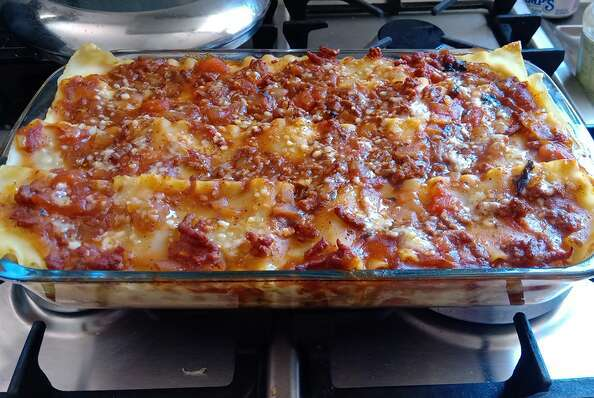

American Lasagna

Making this lasagna a day ahead and refrigerating overnight allows the spices to meld, and gives it exceptional flavor.
Ingredients:
- 1 ½ pounds lean ground beef
- 1 onion, chopped
- 2 cloves garlic, minced
- 1 tablespoon chopped fresh basil
- 1 teaspoon dried oregano
- 2 tablespoons brown sugar
- 1 ½ teaspoons salt
- 2 (6 ounce) cans tomato paste
- 12 dry lasagna noodles
- 2 eggs, beaten
- 1 pint part-skim ricotta cheese
- ½ cup grated Parmesan cheese
- 2 tablespoons dried parsley
- 1 teaspoon salt
- 1 pound mozzarella cheese, shredded
- 2 tablespoons grated Parmesan cheese
Directions:
- In a skillet over medium heat, brown ground beef, onion and garlic for 5 minutes; drain fat. Mix in basil, oregano, brown sugar, 1 1/2 teaspoons salt, diced tomatoes and tomato paste. Simmer for 30 to 45 minutes, stirring occasionally.
- Preheat oven to 375 degrees F (190 degrees C). Bring a large pot of lightly salted water to a boil. Add lasagna noodles, and cook for 5 to 8 minutes, or until al dente; drain. Lay noodles flat on towels, and blot dry.
- In a medium bowl, mix together eggs, ricotta, Parmesan cheese, parsley and 1 teaspoon salt.
- Layer 1/3 of the lasagna noodles in the bottom of a 9x13 inch baking dish. Cover noodles with 1/2 ricotta mixture, 1/2 of the mozzarella cheese and 1/3 of the sauce. Repeat. Top with remaining noodles and sauce. Sprinkle additional Parmesan cheese over the top.
- Bake in the preheated oven 30 minutes. Let stand 10 minutes before serving.